Module 7, Part 2: References, null values, and the NullPointerException#
In this second part of Module 7 we explore some “low-level” details of how
arrays and objects work in Java. This knowledge may not be immediately necessary
for writing simple programs, but it is fundamental for understanding why a Java
program may seem to modify its objects (including arrays) in surprising ways, or
crash unexpectedly. Moreover, this knowledge helps understanding the exact
meaning of null values in Java (which
we have briefly encountered before).
In the following sections we address:
How Java handles arrays and objects using references (a.k.a. pointers)
References (a.k.a. Pointers) to Arrays and Objects#
In this section we address the subtle topic of references (or pointers) to arrays and objects in Java. Although Java does not give us direct access to references/pointers (unlike other programming languages, e.g. C), their presence can become very evident when we change the values stored in an array, or the values of the fields of an object. In the following sub-sections we explore:
These concepts provide the foundations for understanding The null Value and the Dreaded NullPointerException.
Array References and Mutability#
Let us declare two variables a and b of type int[] (i.e. arrays of
integers) on the Java shell. We declare a by creating a new array containing
the values 10, 20, and 30:
jshell> var a = new int[] {10, 20, 30}
a ==> int[3] { 10, 20, 30 }
| created variable a : int[]
Then, we define the variable b by assigning to it the value of a:
jshell> var b = a
b ==> int[3] { 10, 20, 30 }
| created variable b : int[]
By looking at what we wrote, it might seem that we have defined the variable b
as a “copy” of a. Indeed, the Java shell reports that the contents of
variables a and b are the same: they both consist of an array containing the
elements 10, 20, 30.
Let us now modify e.g. the 2nd element of the array of variable b:
jshell> b[1] = 999
...
jshell> b
b ==> int[3] { 10, 999, 30 }
...
As expected, the Java shell shows that the 2nd element of the array of variable
b has been changed, and it has now value 999 (while it was 20 before). Let’s
now check the contents of the array in the variable a:
jshell> a
a ==> int[3] { 10, 999, 30 }
...
The array of the variable a has been modified, too!
This happens because in Java, arrays are handled by reference: in other
words, the result of an array creation expression like new int[] {10, 20, 30}
is a reference (or pointer) to a newly-created array instance, which is
stored in the computer memory managed by Java (in a memory area called the
heap). Such a reference/pointer is essentially the address of the memory
location where the actual array data is stored.
Consequently, in the example above, the variable a does not contain a “full
copy” of the array (and the values contained in the array): instead, the
variable a only contains a reference (a.k.a. pointer) to that array. This is
depicted below: the “heap memory” contains the array data (length and elements),
and a just contains a reference to it.
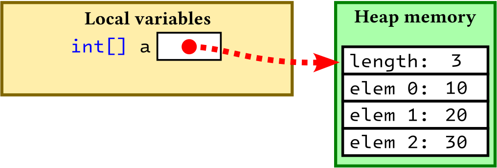
Correspondingly, when we define var b = a, we are not “copying the whole
array of a into b”: we are only copying the value of the variable a (which
is just a reference/pointer to the array data) into the variable b — and
therefore, the variable b will contain a reference/pointer to the same array
data already referenced by a. In technical terms, the variables a and b
are aliases that reference the same array data. This is depicted below.
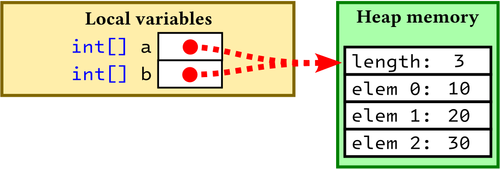
Note
You can observe a similar phenomenon in
BlinkenBits. E.g., suppose that the
register r0 contains the value 42, which is the address of a memory location
which contains some data. If we execute the instruction r1 <- r0,
we are copying the value contained in r0 into r1: as a result, both r0
and r1 will contain the value 42, so both registers contain the address of
the same memory location. Note that by executing r1 <- r0 we are not
“copying” the data which is stored in the memory location with address 42!
The consequence of all the above is: if we use variable b to change the array
elements (e.g. by setting b[1] = 999), the change is also visible through
variable a — because a and b reference the same array data. The
vice versa is also true: if we use variable a to change the array elements,
the change is also visible through variable b. This is depicted below.
Note
Continuing the note above, we can observe a similar phenomenon in
BlinkenBits.
Assume that both registers r0 andr1 contain the value 42, which is the
address of a memory location containing the value 10. In this case, the
registers r0 and r1 they are acting as aliases referring to the same memory
location; therefore, any change to that memory location performed via register
r0 is visible through register r1 — and vice versa.
For instance, suppose that register r2 contains the value 999. Let us execute
the following instruction, which writes the value 999 at the memory location
pointed by r0:
memory@r0 <- r2
This will change the content of the memory location at address 42: it was 10, it becomes 999.
Then, let us load the value at the memory location pointed by r1 into r3:
r3 <- memory@r1
This last instruction load the value contained in the memory location at
address 42. That value is 999, and it was previously written using register
r0.
Example 47 below shows how Java handles memory and references in more detail. The main takeaways are:
while it runs, a Java method stores its variables in a dedicated memory area called the memory stack; however,
arrays are always stored in on the memory heap, and their data is handled using references.
Then, Example 48 shows what happens when an array is passed as argument to another method that modifies it.
Example 47 (Java stack, heap, and array references)
Consider the following Java program:
1class StackHeapReferences {
2 public static void main(String[] args) {
3 var n1 = 42;
4 var n2 = n1;
5
6 var a = new int[] {10, 20, 30};
7 var b = a;
8
9 b[1] = 999;
10 System.out.println(a[1]);
11 }
12}
When the program starts and begins the execution of the main static method
(line 2), the program memory is organised as shown in the following picture:
the stack memory frame of
mainis used as a “working area” by themainmethod, to store the values of its local variables. Whenmainstarts executing, its stack memory only contains the variableargscoming from the method argument;the heap is a global memory area used by the whole program. It contains a sequence of memory locations, each one having its own address. In the picture below, the memory locations at addresses 1024, 1028, etc. are available for storing data.
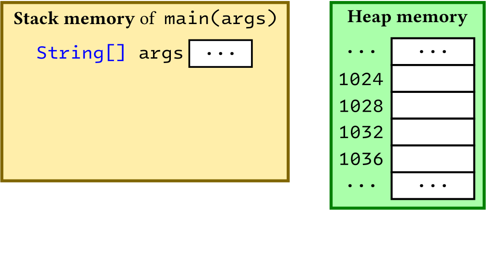
When the execution reaches line 3 of the program, Java allocates on the
stack some space for the value of the variable n1, and stores 42 there.
This corresponds to the intuition that “the variable n1 has the value 42” —
and indeed, this intuition is correct for variables of all
primitive types in Java.
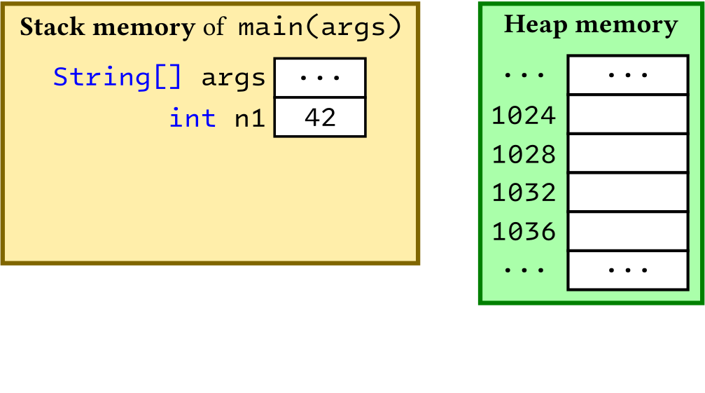
When the execution reaches line 4, the program allocates on the stack some space
for the value of the variable n2, and copies there the value of n1 (i.e.
42). Again, this corresponds to the intuition that “the variable n2 has
the value 42”.
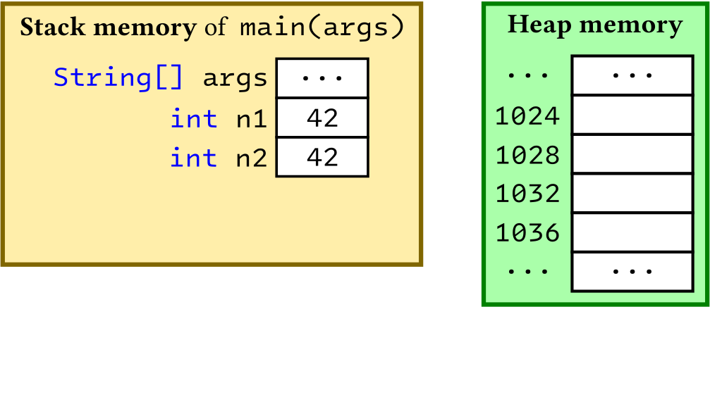
When the execution reaches line 6, things become more complicated:
Java allocates on the stack some space for the variable
a;then, Java creates the array by executing
new int[] {10, 20, 30}.
Now, new stores the array data on the heap: in this example, it stores the
data starting from memory address 1024, by writing the array size (i.e. 3)
followed by the array values (i.e. 10, 20, 30)
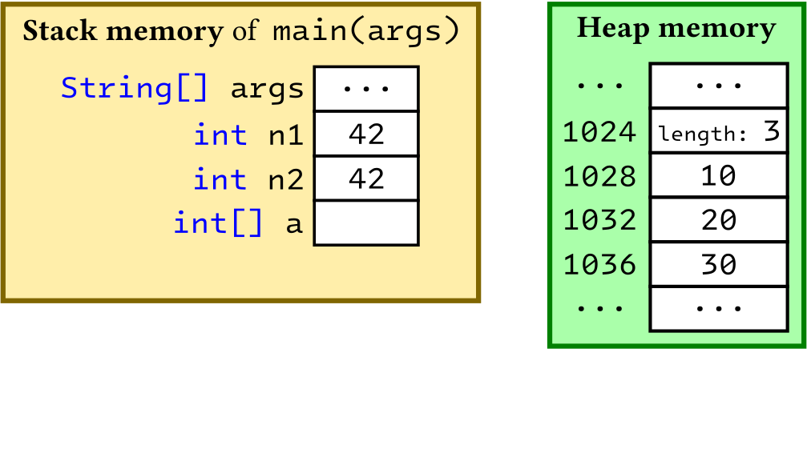
To complete the execution of line 6, a reference the newly-created array data
on the heap is stored in the stack location for variable a. That reference is,
in essence, the memory address of the newly-created array data.
(In this example, that address is 1024.) Therefore, a variable
like a (of type array) does not contain the actual array data: it merely
contains a reference (or pointer) to the array data on the heap.
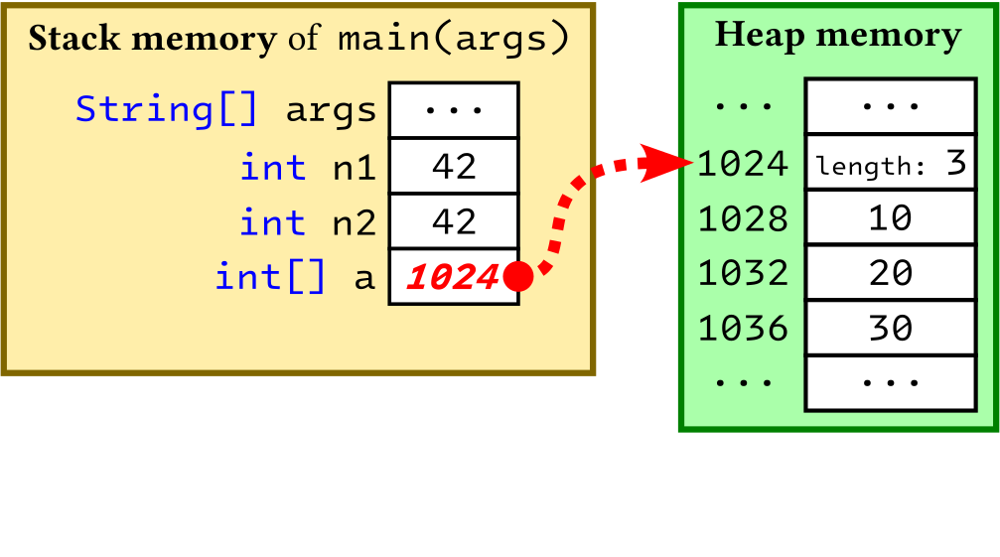
When the execution reaches line 7, the program allocates on the stack some space
for the variable b, and copies there the value of a (i.e. the memory address
1024). (This is similar to how, on line 4, the variable n2 was initialised
by copying the value of variable n1.)
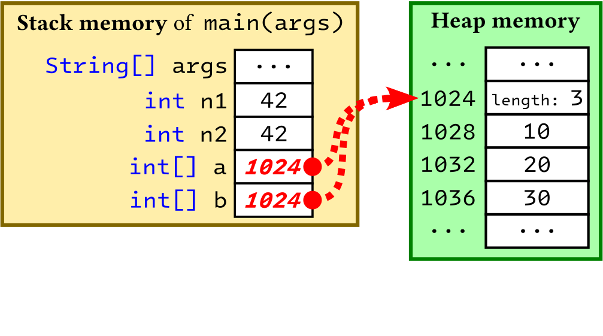
At this point, the variables a and b are aliases that refer to the
same array data stored in the heap. Therefore, on line 9, the assignment
b[1] = 999 modifies the 2nd element of the same array that we created on line
6 (and is also referenced by a).
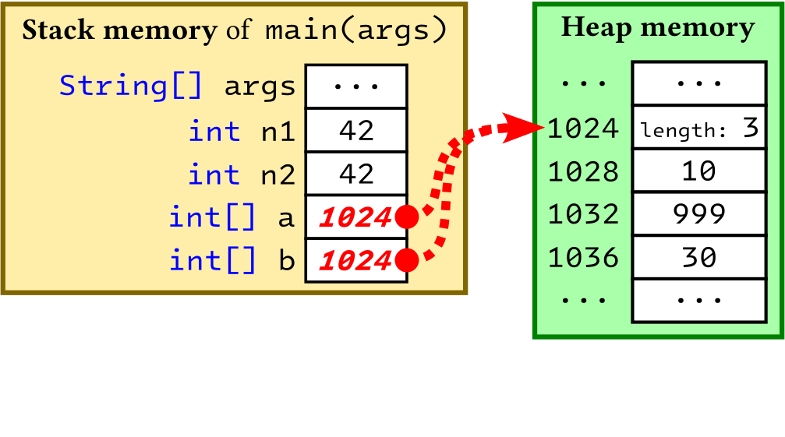
Consequently, when line 10 prints the current value of a[1], it prints the
value 999.
Example 48 (Passing an array as argument to a method)
We now see how a Java method can modify an array received as argument, and how the modification can be seen in the code that called the method.
Consider the following Java program: it is similar to the one in
Example 47, except that it passes the array b to the
static method modify — which, in turn, modifies the 2nd element of the
argument array arr:
1class StackHeapReferences {
2 public static void main(String[] args) {
3 var n1 = 42;
4 var n2 = n1;
5
6 var a = new int[] {10, 20, 30};
7 var b = a;
8
9 modify(b);
10 System.out.println(a[1]);
11 }
12
13 static void modify(int[] arr) {
14 arr[1] = 999;
15 }
16}
This program runs similarly to the one in Example 47, until
it reaches the call to modify(b) on line 9. At that point, the stack and
heap memory look as follows:
When the method call modify(b) is executed, two things happen:
Java allocates a new stack memory frame as “working area” for the method
modify(arr). In that memory area, the methodmodify(arr)stores its local variables — beginning with the argument variablearr. (Meanwhile, the stack memory used bymainis still there, with its local variables)The variable
arrin the stack frame ofmodify(arr)is initialised with the value passed with the method callmodify(b)inmain: i.e. the value ofbinmain(which is a reference to the heap memory address1024) is copied inarr.
As a consequence, the variable arr in the method modify points to the same
array data (on the heap) that is also pointed by variables a and b in the
method main.
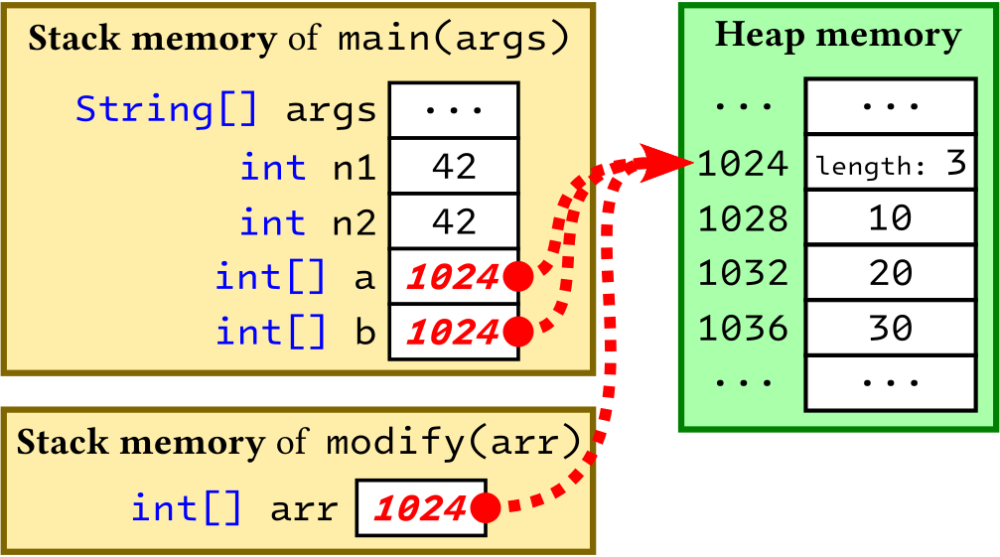
When the program execution reaches line 14, modify(arr) performs the
assignment arr[1] = 999 — which changes the value in the 2nd position of the
array stored on the heap (which is also referenced by a and b in main).
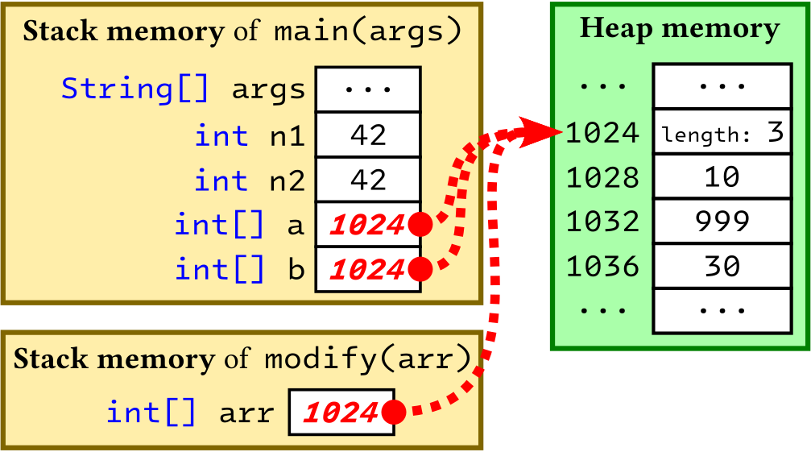
Then, the method modify(arr) ends: its stack frame is removed, and the
execution goes back to line 10 of the method main(args) (which keeps using its
own stack frame).
Consequently, when line 10 of main(args) prints the current value of a[1],
it prints the value 999.
Summing up: the method modify(arr) has modified the array arr received as
argument; and the method main(args) can notice that its arrays a and b
have been changed after calling modify(b).
Object References and Mutability#
What we wrote above about arrays applies, more generally, to all objects in Java:
When Java executes e.g.
var x = new ClassName(...)to create an object of a class calledClassName, the new object is stored in the memory heap, andnewjust returns a reference/pointer to that object — which in this example is used to initialise the variablex.Then, if we write e.g.
var y = x, the variableybecomes an alias of the same object already referenced byx. Therefore, any change applied to that object via variablexis visible viay, and vice versa.
This is illustrated in more detail in Example 49 below.
Example 49 (Passing an array as argument to a method)
This example explains in detail what was outlined in Remark 16 — i.e. how a method can modify an object received as argument.
Suppose we have the following class definition:
1class Point {
2 int x;
3 int y;
4}
Consider the following Java program, which uses the class Point above:
1class StackHeapReferences2 {
2 public static void main(String[] args) {
3 var n = 42;
4 var p1 = new Point();
5 var p2 = p1;
6
7 modify(p2);
8 System.out.println(p1.y);
9 }
10
11 static void modify(Point p) {
12 p.y = 999;
13 }
14}
Similarly to Example 47, the program begins executing the
static method main (line 2) with the argument variable args on the stack
frame. The heap area has some available space (in this example, at the memory
addresses starting with 2048).
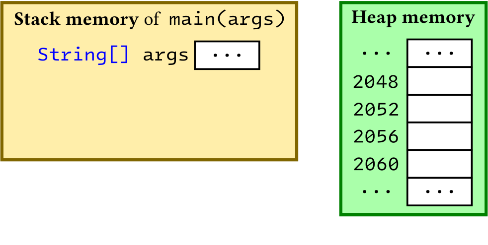
After the program executes line 3, Java allocates some stack space for the int
variable n and stores there the primitive value 42.
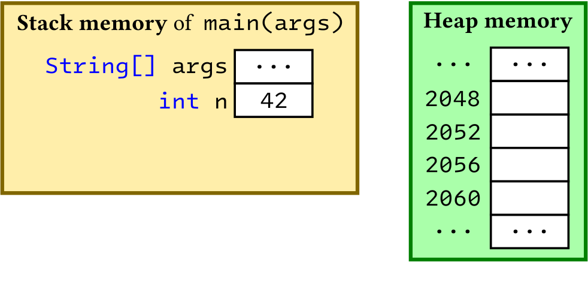
When the execution reaches line 4, two things happen:
the variable
p1is allocated on the stack;new Point()stores a new object of the classPointon the heap memory: in this example,newstores information about the class of the new object (Point, at memory address 2048) and the values of the object’s fields (xat address 2052,yat address 2056); both fields are initialised with the default value0.
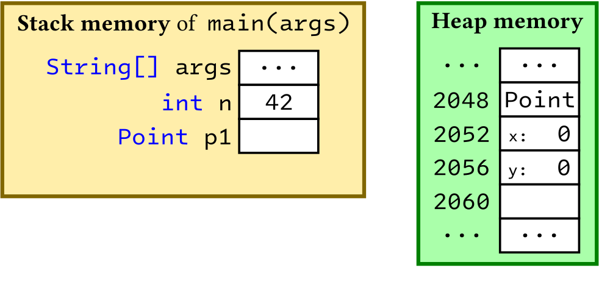
The execution of line 4 completes by saving in the variable p1 a reference
(or pointer) to the new object’s memory address (2048). Consequently, the
variable p1 does not contain the “whole” object: it just contains a
reference to the object data, which is stored in the heap memory.
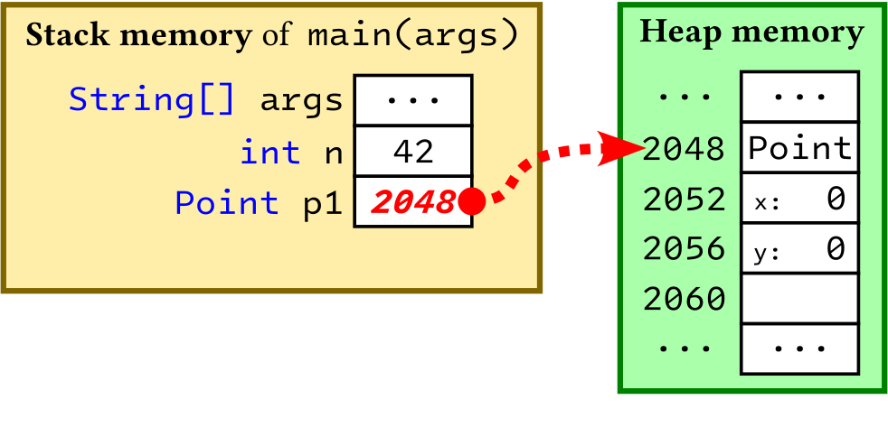
After the execution of line 5 (i.e. var p2 = p1), the variable p2 is
allocated on the stack, and contains a copy of p1’s value — i.e. a copy of
the reference to the Point object stored in the heap memory address 2048.
Consequently, p1 and p2 are now aliases that refer to the same Point
object stored in the heap.
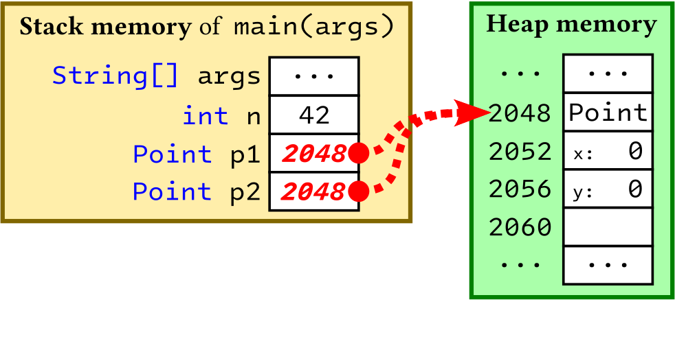
On line 7, the method call modify(p2) creates a new stack frame as “working
area” for the method modify(p), where the local variable p contains a copy
of the value of the call argument p2 — i.e. a copy of the reference to the
Point object stored in the heap memory address 2048.
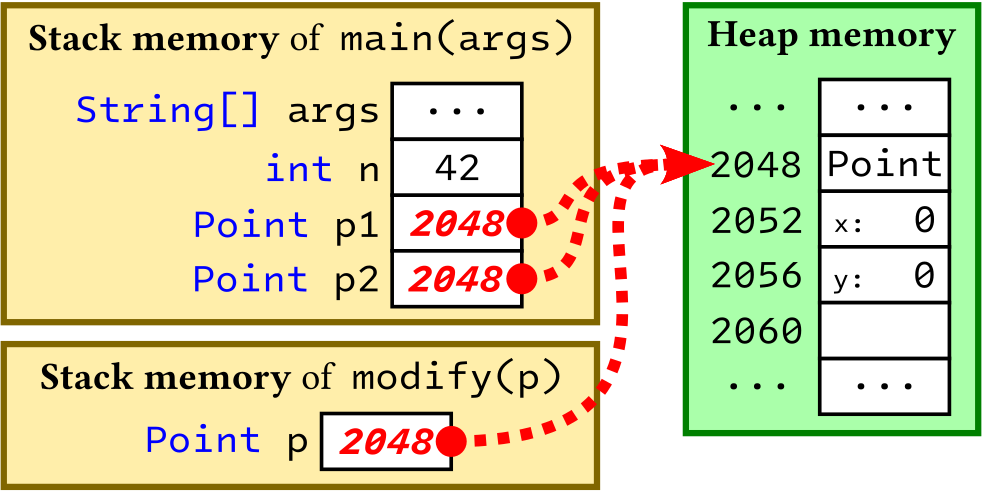
Now, when line 12 is executed (i.e. p.y = 999), the field y of the object
referenced by p is updated with the value 999. Consequently, this update
modifies the same object that is also referenced by p1 and p2 in the method
main.
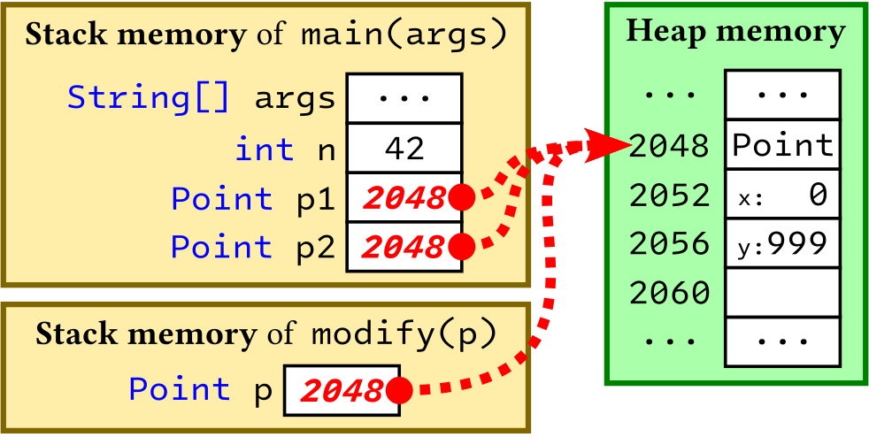
When the method modify(p) ends, Java eliminates its stack frame, and the
execution continues in method main on line 8, which prints the value of
p1.y.
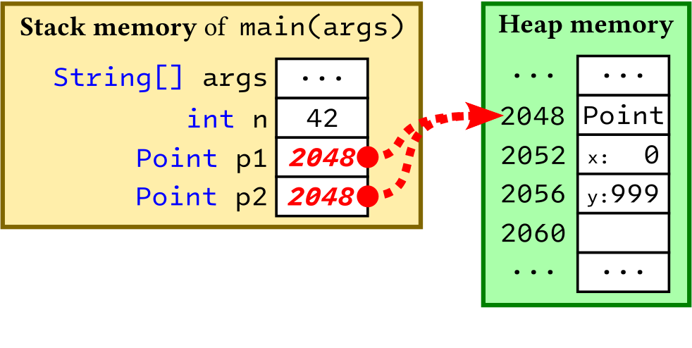
Since the variable p1 references the same object that has been modified by
calling modify(p2), the program prints 999.
Summing up: the method modify(p) has modified the object p received as
argument; and the method main(args) can notice that its objects p1 and p2
have been changed after calling modify(p2).
References in Arrays of Objects (and in Arrays of Arrays)#
We now know that all Java objects (and arrays) are allocated on the heap, and
new produces a reference to a heap location. A consequence of this fact is:
when we define an array of objects (or an array of arrays), we are actually
defining an array of references to objects (or arrays). This is illustrated
in Example 50 below.
Example 50 (References in an array of arrays)
Consider the following program, that defines an array arr, and then uses
it to define a bidimensional array arrArr:
1class ArrayOfArrayReferences {
2 public static void main(String[] args) {
3 var arr = new int[] {10, 20};
4 var arrArr = new int[][] {arr, arr};
5
6 for (var i = 0; i < arrArr.length; i++) {
7 for (var j = 0; j < arrArr[i].length; j++) {
8 System.out.println("arrArr["+i+"]["+j+"] == " + arrArr[i][j]);
9 }
10 }
11
12 System.out.println("***** Assigning: arr[1] = 999 *****");
13 arr[1] = 999;
14
15 for (var i = 0; i < arrArr.length; i++) {
16 for (var j = 0; j < arrArr[i].length; j++) {
17 System.out.println("arrArr["+i+"]["+j+"] == " + arrArr[i][j]);
18 }
19 }
20 }
21}
By looking at the program, it may seem that the array arr is copied (twice)
inside arrArr. However, this is not the case: arrArr only contains two
references to the array also referenced by arr; consequently, when the
element at index 1 of arr is modified (on line 13). the change is also visible
via arrArr.
More in detail, the program runs as follows. When main(args) begins its
execution (on line 2), its stack frame only contains the argument variable
args, and the heap has some available space (in this example, the memory
locations at addresses 1024–1044).
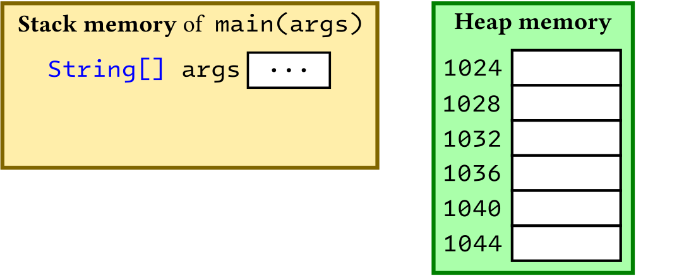
When var arr = new int[] {10, 20} is executed (on line 3), the following
happens:
the variable
arris allocated on the stack;the new array data is stored on the heap. In this example, the memory location at address 1024 contains the array size (
2), and the locations that follow contain the array values (10and20);the reference to the new array data (returned by
new int[]...) is stored in the stack location of variablearr.
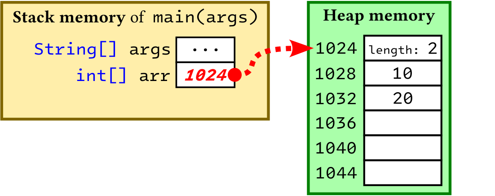
When var arrArr = new int[][] {arr, arr} (line 4) is executed, the following
happens:
the variable
arrArris allocated on the stack;the new array data is stored on the heap. In this example, the memory location at address 1036 contains the array size (
2), and the locations that follow contain the array values — which are copies of the value ofarr, i.e. references to the array data stored at memory address1024;the reference to the new array data (returned by
new int[][]...) is stored in the stack location of variablearrArr.
Consequently, each element of the array referenced by the variable arrArr is
itself a reference to the same array data (stored in the heap) that is also
referenced by the variable arr.
At this point, the first loop in the program (lines 6–10) prints:
arrArr[0][0] == 10
arrArr[0][1] == 20
arrArr[1][0] == 10
arrArr[1][1] == 20
When the execution reaches the assignment arr[1] = 999 (line 13), the value
stored at index 1 of the array referenced by arr is changed to 999.
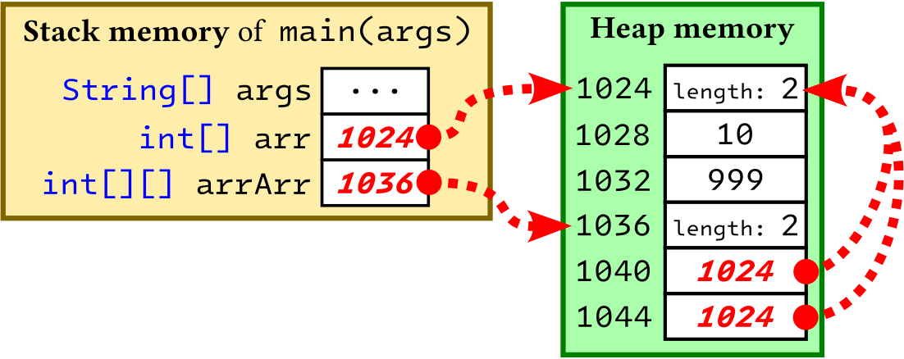
As a consequence, the second loop in the program (lines 15–19) prints:
arrArr[0][0] == 10
arrArr[0][1] == 999
arrArr[1][0] == 10
arrArr[1][1] == 999
You can observe that the change applied to the array referenced by arr is
also visible through arrArr.
The null Value and the Dreaded NullPointerException#
In Remark 15 we have seen that, if we create an array
without providing its contents, then the array will be filled with default
values, which depend on the array type. For instance, an array of type int[]
will be filled with 0: (try this on the Java shell)
jshell> var numbers = new int[3];
numbers ==> int[3] { 0, 0, 0 }
| created variable numbers : int[]
Similarly, in Example 37 and when discussing constructors, we have seen that, when we create an object, its fields initially contain a default value (and we can define a constructor that immediately assigns another value to the fields, if needed).
An important thing to know is that
in Java, the default value for objects is null. We have
previously mentioned that, intuitively, the null value
represents a “missing object” (or a “missing array”); now, with our understanding
of references (a.k.a. pointers) in Java,
we can be more precise: the null value represents
a “missing” reference (a.k.a. pointer) to an object.
This means that:
The
nullvalue might be used wherever an object (or array) is expected. For instance, if you define the variable:var str = "Hello!";
you could later assign the
nullvalue to it:str = null;
If you create an array of objects without specifying the contents, it will be filled with
nullvalues. For example: (try this on the Java shell!)jshell> var arr = new String[5] arr ==> String[5] { null, null, null, null, null } | created variable arr : String[]The same happens when creating an array of arrays without specifying the size or contents of the “inner” arrays (because in Java, arrays are objects, too). For example: (try this on the Java shell!)
jshell> var arrArr = new int[2][] arrArr ==> int[2][] { null, null } | created variable arrArr : int[][]Observe that the array referenced by
arrArrcontains 2nullvalues, representing “missing” references to arrays (in this case, such “missing” arrays have typeint[])Also, if an object field is expected to contain an object, then it will contain
nullby default (and the constructor can assign a different value, if needed). For example, try creating the following classTeston the Java shell:class Test { String field1; int[] field2; }
Observe that the class fields are expected to contain an object (of the class
String) and an array ofintegers (and in Java, arrays are objects, too). Now, try creating an object of the classTestand visualising the (default) values contained in its fields:jshell> var t = new Test() t ==> Test@30dae81 | created variable t : Test jshell> System.out.println("Field 1: " + t.field1); Field 1: null jshell> System.out.println("Field 2: " + t.field2); Field 2: null
Checking Whether a Variable, Array Position, or Object Field Contains null#
We can check whether a variable, an array position, or an object field contains
the null value with a simple comparison: (try the following code snippets on
the Java Shell, continuing the examples above)
if (str == null) {
System.out.println("the variable 'str' contains null!");
} else {
System.out.println("the variable 'str' does not contain null");
}
if (arr[1] == null) {
System.out.println("arr[1] contains null!");
} else {
System.out.println("arr[2] does not contain null");
}
if (arrArr[0] == null) {
System.out.println("arrArr[0] contains null!");
} else {
System.out.println("arrArr[0] does not contain null");
}
if (t.field1 == null && t.field2 == null) {
System.out.println("Both t.field1 and t.field2 contain null!");
} else {
System.out.println("t.field1 or t.field2 does not contain null");
}
The NullPointerException Error#
If a program tries to call a method of a null value, or access a field of a
null value, then the program will crash during its execution, with the
error NullPointerException.
For instance, continuing the examples above, one might expect that:
the variable
strhas typeString, so we should be allowed to call its methodtoLowerCase()similarly,
arr[0]has typeString, so we should be allowed to call its methodtoUpperCase();arrArr[0]has typeint[], so we should be allowed to access its fieldlength:arrArr[0]has typeint[], so we should be allowed to access its elementarrArr[0][0];
Indeed, Java will let us write code that performs these operations (without
reporting any type error) and will let us run that code — but when such
operations are actually executed, they will produce a NullPointerException
error. We can observe such errors on the Java shell: (continuing the examples
above)
jshell> str.toLowerCase()
| Exception java.lang.NullPointerException: Cannot invoke "String.toUpperCase()" because "...str" is null
jshell> arr[0].toUpperCase()
| Exception java.lang.NullPointerException: Cannot invoke "String.toUpperCase()" because "...arr[0]" is null
jshell> arrArr[0].length
| Exception java.lang.NullPointerException: Cannot read the array length because "...arrArr[0]" is null
jshell> arrArr[0][0]
| Exception java.lang.NullPointerException: Cannot load from int array because "...arrArr[0]" is null
For this reason, when writing Java code, it is important to consider whether our
code might try, while running, to call a method on a null value, or access a
field of a null value, or index an element of a null value. Correspondingly,
we may want to include checks to see whether a variable, array element, or
object field is null.
Important
NullPointerException errors are probably the most common bug in Java programs,
and they arise when a programmer writes code that introduces or mishandles a
null value (i.e., a “missing” reference to an object or array) while the
program runs.
Summing up what we wrote above,
null values can be introduced in five main ways:
The programmer has manually written
nullin the code, e.g. by assigning it to a variable, or passing it as an argument to a method.The programmer has defined an uninitialised array of objects (or an array of arrays), and has left some array element with the default value
null.The programmer has created an object with a field that should be an object (or an array), but that field has been left with the default value
null.The programmer has declared an uninitialised variable whose type is a class or an array, using e.g. the syntax:
String stringVar; // Uninitialised variable of type String int[] arrayVar; // Uninitialised variable of type int[]
and after that variable has been declared, the programmer leaves it with its default value (which is
null).Note
You can try executing
String stringVaron the Java shell: you will see that the newly-declared variablestringVarhas typeStringand containsnull(i.e., the default value for objects). When this happens, calling e.g.stringVar.length()causes aNullPointerExceptionerror.Observe that these lecture notes adopt a more modern Java syntax for declaring variables, i.e.,
var str = .... This syntax forces us to provide an expression to initialise the newly-declared variable — and this way, introducingnulls by mistake is considerably more difficult.The programmer has used some method (possibly written by others) that returns
null, or modifies some object (or array) given as argument by assigningnullto its fields (or array elements).
After a null value has been introduced in the data handled by a running
program, the program can end up “multiplicating” that null value by assigning
it to other variables, object fields, and array elements. Therefore, if a
program crashes with a NullPointerException error, the problem can be very
hard to debug: tracking down the origin of a null value and fixing it can take
a lot of time!
Concluding Remarks#
You should now have an understanding of these topics:
Note
After the discussion on
array and object references, we can
now exactly understand why we should not (usually) compare arrays
and object using the operator ==: that operator compares array/object
references and returns true if two references are equal (i.e. if they
are aliases that point to the same array/object in the heap memory).
You can try it by yourself on the Java shell. First, define the following variables and arrays:
var a = new int[] {1, 2, 3};
var b = a;
var c = new int[] {1, 2, 3};
Then, you can observe that:
a == bproducestrue, becauseaandbare aliases for the same array in the memory heap (as shown above);a == cproducesfalse, becauseaandccontain references to different arrays in the heap memory (although those two arrays contain exactly the same values).
References and Further Readings#
You are invited to read the following sections of the reference book: (Note: they sometimes mention Java features that we will address later in the course)
Section 3.1 - “Creating Objects”
Section 8.3 - “Arrays of Objects”
Section 8.4 - “Command-Line Arguments”
Section 8.6 - “Two-Dimensional Arrays”
The idea of null reference was introduced in 1964/1965 by the famous computer
scientist Tony Hoare, and was later
adopted by many programming languages. When a programming language offers
null references (like Java, C, C++), they become a frequent source of bugs —
and for this reason, Tony Hoare has declared that null references have been
his “billion dollar mistake.” If you are curious, you can watch Tony Hoare
discuss the topic in
this talk.
Exercises#
Note
These exercises are not part of the course assessment. They are provided to help you self-test your understanding.
Exercise 29 (Experimenting with arrays of (references to) objects)
Write a Java program based on the one in Example 50 — but, instead of an array of arrays, use an arrays of objects. For example:
define a variable
pof the classPoint(see Example 49);define an array of
Points asvar points = new Point[] {p, p};show that, if you modify the value of the field
p.y, the change is also visible when you print the values ofpoints[0].yandpoints[1].y.
To understand what is happening, it may be helpful to draw diagrams that outline how the stack and heap are used by the program.
Lab and Weekly Assessments#
During the lab you can try the exercises above or begin your work on the weekly assessments below.
Important
For each assessment, you can download the corresponding handout and submit your solution on DTU Autolab: https://autolab.compute.dtu.dk/courses/02312-E24.
For details on how to use Autolab and the assessment handouts, and how to submit your solutions, please read these instructions.
If you have troubles, you can get help from the teacher and TAs.
07 - Find the null, part 1#
Your task is to edit the file NullFinder.java provided in the handout, and
implement the following 4 static methods (in the class NullFinder):
static boolean containsNull(int[] arr)
static boolean containsNull(String[] arr)
static boolean containsNull(int[][] arrArr)
static boolean containsNull(String[][] arrArr)
Each one of the static methods must inspect its argument, and return true if
the argument itself is null, or if it is an array that contains a null value
somewhere. Otherwise (i.e., if the argument is an array that does not contain
any null value), the static methods must return false.
The handout includes some Java files called Test01.java, Test02.java, etc.:
they are test programs and utility methods to test the class NullFinder, and
they might not compile or work correctly until you complete the implementation
of NullFinder.java. You should read those files and try to run the test
programs, but you must not modify them.
When you are done, submit the modified file NullFinder.java on DTU Autolab.
Warning
The automatic grading on DTU Autolab includes some additional secret checks that test your submission with more arrays. After you submit, double-check your grading result on DTU Autolab: if the secret checks fail, then your solution is not correct, and you should fix it and resubmit.
Tip
To save some work, you can implement the 3rd static method above by calling the 1st, and the 4th static method by calling the 2nd…
Note
The static methods that take as argument an array of arrays must also support jagged arrays.
In an array of arrays, the “inner” arrays might contain
nulls (depending on their type): the static methods above must check whether this happens, when appropriate.You might notice that we are defining multiple (static) methods that have the same name (
containsNull) but take different types of arguments: technically, this is called overloading.
08 - Array Deep-Copy#
This is a follow-up to 01 - Array Equality, and the starting point
is your updated file ArrayUtils.java with your implementations of the static
methods areEqual(arr1, arr2) and areEqual(arrArr1, arrArr2). Your task is to
implement the following additional static methods:
static int[] deepCopy(int[] arr)
which returns a deep copy of the given array
arr— i.e. a new array that contains the same number ofintvalues contained inarr, and where each value is equal to the corresponding value inarr. In other words:calling
areEqual(arr, deepCopy(arr))must always returntrue; andif we define
var copy = deepCopy(arr), then changing a value of the arraycopymust not change the contents of the original arrayarr.
static int[][] deepCopy(int[][] arrArr)
which returns a deep copy of the given array of arrays
arrArr— i.e. a new array that contains same number of arrays ofarrArr, and where each array is a deep copy of the corresponding array inarrArr. In other words:calling
areEqual(arrArr, deepCopy(arrArr))must always returntrue; andif we define
var copy = deepCopy(arrArr), then changing a value of the array of arrayscopymust not change the contents of the original array of arraysarrArr.
The handout includes some Java files called Test01.java, Test02.java, etc.:
they are test programs that use the code you should write in ArrayUtils.java,
and they might not compile or work correctly until you complete your work. You
should read those test programs, try to run the tests, and also run ./grade to
see their expected outputs — but you must not modify those files.
When you are done, submit the modified file ArrayUtils.java on DTU Autolab.
Hint
After you implement the first static method above, you might reuse it to implement the second.
To create an array of arrays containing
nuninitialised arrays, you can write e.g.: (try this on the Java shell!)var arrArr = new int[n][];
This way, the array
arrArrcontainsnelements, and each one of them isnull(i.e. each element ofarrArris a “missing” reference to an array ofintegers). You can then assign an actual array ofintegers to each element ofarrArr, e.g.:arrArr[0] = new int[] {1, 2, 3};
Note
You might notice that we are defining two (static) methods that have the same
name (deepCopy) but take a different number and/or types of arguments:
technically, this is called overloading.
09 - Find the null, part 2#
This assignment is similar to 07 - Find the null, part 1. The handout
includes the file NullFinder.java, which (unlike
07 - Find the null, part 1) contains the definitions of two classes (with
the respective constructors), which you must not modify:
Employee, andCompany, which has one field that is an array ofEmployeeobjects.
Your task is to edit the file NullFinder.java and implement the
following 3 static methods in the class NullFinder:
static boolean containsNull(Employee[] arr)
static boolean containsNull(Company c)
static boolean containsNull(Company[] arr)
Each one of the static methods must inspect its argument, and return true if
the argument itself is null, or if it contains a null value somewhere (e.g.,
a Company object contains an array of Employees, and the name of one of them
might be null…). Otherwise, the static methods must return false.
The handout includes some Java files called Test01.java, Test02.java, etc.:
they are test programs and utility methods to test the class NullFinder, and
they might not compile or work correctly until you complete the implementation
of NullFinder.java. You should read those files and try to run the test
programs, but you must not modify them.
When you are done, submit the modified file NullFinder.java on DTU Autolab.
Warning
The automatic grading on DTU Autolab includes some additional secret checks that test your static methods with more arguments. After you submit, double-check your grading result on DTU Autolab: if the secret checks fail, then your solution is not correct, and you should fix it and resubmit.
Tip
If may want to implement the static methods in the order given above: this way, you can implement the 2nd method by calling the 1st, and the 3rd by calling the 2nd…
Note
You might notice that we are defining multiple (static) methods that have the
same name (containsNull) but take different types of arguments: technically,
this is called overloading.